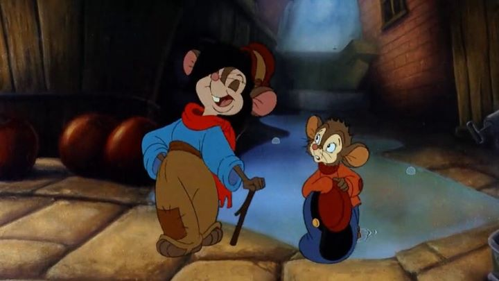

"An American Tail" might be one of the most recognizable of Don Bluth's animated films, an American classic alongside "The Secret of NIMH," "All Dogs Go To Heaven" and "The Land Before Time." It was also made in partnership with Steven Spielberg, who no doubt had a hand in approving the story: had "An American Tail" been a live-action film, it would have be certain to have won awards for best picture in 1986. This has been true for a long time: some of the best storytelling is being done in animation, but rarely gets recognized as anything but kids' fodder.The initial 15 minutes of "An American Tail" is a classic, if familiar, setup. In Russia (technically, part of an independent Ukraine a few years after the film's release), we see a community of mice in clothing, living their own lives alongside real humans next door (like Disney's "The Rescuers," "The Great Mouse Detective," etc.). The Mousekowitz family lives a humble but happy life, a mother, father, and two children. "Tell us again about America!" say the children. "Ah! America..." The father sighs with a big smile on his face. It's a land like no where else, a land of opportunity. Later, the mice sing of how "There are no cats in America, and the streets are paved with cheese!" When their small Russian village gets attacked and set aflame (both by humans and cats), the mice have nothing else, and take their chances on the next boat to America. Fievel, the young, curious and mischievous boy of the family, gets swept ashore from the boat, but is able to find his way safely to America separately. The rest of the film has Fievel alone, trying to find his family across the large city of pre-1900's New York, coming across an array of colorful characters (some friendly, most not) along the way. And of course, all the mice come to realize America isn't quite all it's cracked up to be, a theme that still rings true to this day. Yes, jobs are more abundant and better pay is possible, but also more competiton and higher living expesnses, and greater disparity of wealth. And of course, cats are as abundant in America as anywhere else: if trying to run away from your home country for safety, you might be better off fighting to fix your country instead, something the mice finally find the courage to do in the free and abundant country of the USA. A better land doesn't exist elsewhere: it's up to you to make your home.Overall, this story might be the most ambitious Don Bluth has been a part of. But after the 15-minute introduction, the story feels as lost as Fievel is. The huge cast of side characters aren't particularly memorable, nor are the events of the story: even after seeing it multiple times, it's easier to forget what happens in "An American Tail" than in any of Bluth's other films. For comedic effect, Fievel comes close to reuniting with his family multiple times in the movie, only not to notice - if he had, the movie would be over in under 20 minutes! And some of the themes and lessons learned, if there were any, get lost in the adventure of it all.Don Bluth's animation style also varies in its effectiveness here. The mice are adorably cute, almost to the point of annoyance, with their large eyes, and even larger mouths, each too big for their heads as they gap in wonder at everything. Even during the more thoughtful camera shots, the character designs can be distracting, and the animation not quite as strong as some of the other films. The music and voice acting is consistently good, but the music is forgettable, and the acting a bit too exagerrated to take seriously. Some of the songs are nice though, the standout being an early song in "Never Say Never." "An American Tail" is an important American film, and for cultural significance, should be preserved and watched by everyone. But children will likely be bored watching it (and would find enjoyment in the less ambitious but more entertaining sequels), and adults will have trouble accepting it as anything more than a children's film, which the movie ultimately accepts being. That too is a metaphor for America and its values in entertainment, for better or for worse.
- "Ani" More reviews can be found at : https://2danicritic.github.io/ Previous review: review_Amagi_Brilliant_Park Next review: review_An_American_Tail_-_Fievel_Goes_West